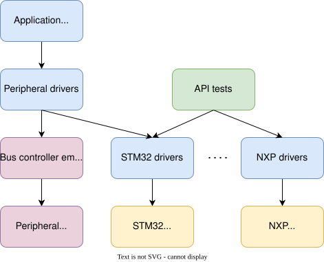
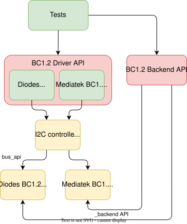

外部总线及总线所连外设的仿真器
概述
Zephyr 支持一个简单的仿真器框架，无需真实硬件即可测试外部外设驱动。
仿真器用于仿真外部硬件设备，以支持对各个子系统的测试。例如，可以为一个 I2C 电子罗盘编写仿真器，使它出现在 I2C 总线上，并像真实硬件设备一样使用。
仿真器通常会实现一些专门用于测试的特性。例如，罗盘仿真器可以在 I2C 总线速率过高时返回虚假数据，或在尚未完成校准时返回无效的测量值。这样就可以测试上层代码能否正确处理这些情况。因此，如果仿真了所有故障条件，测试覆盖率可以接近 100%。
概念
下图最上方是应用程序代码 / 上层测试，也就是我们最终要运行的应用程序。

其下方是外设驱动，例如 AT24 EEPROM 驱动。我们可以使用通过总线控制器仿真器连接的外设仿真器来测试外设驱动，总线控制器仿真器会把来自 AT24 驱动（外设驱动）的 I2C 等总线流量传递给 AT24 模拟器（外设仿真器）。
另外，我们可以使用 API 测试在真实硬件上测试 STM32 和 NXP 的 I2C 驱动。这需要在总线上连接某种外设，但借此可以验证驱动的大部分功能。
将两者结合起来，就可以完全在 native_sim 上测试应用程序和外设代码。既然已知真实硬件上的 I2C 驱动能够正常工作，那么应用程序和外设驱动在真实硬件上也应该能正常工作。
使用上述框架，我们可以在 native_sim 上为所有非芯片驱动使用仿真器，从而测试整个应用程序（例如嵌入式控制器）。
借助这种方法，我们可以：
为每个驱动（绿色）编写单独的测试，覆盖所有故障模式、错误条件等。
确保驱动（绿色）的测试覆盖率达到 100%
为驱动组合编写测试，例如由 I2C GPIO 扩展器驱动通过 I2C 总线提供 GPIO，再由这些 GPIO 控制充电器。所有这些都可以在仿真环境或真实硬件上运行。
编写一个将所有这些部分整合在一起、并在 native_sim 上运行的复杂应用程序。我们可以在主机上开发，使用源码级调试等。
通过添加 Kconfig 和设备树片段，将应用程序迁移到任何提供所需特性（例如 I2C、足够多的 GPIO）的开发板上。
创建设备驱动仿真器
仿真器子系统以 设备驱动模型 为模型。可以使用 EMUL_DT_DEFINE() 或 EMUL_DT_INST_DEFINE() API 之一创建仿真器实例。
外设仿真器与真实设备驱动复用同一个设备树节点。这意味着你的仿真器在定义 DT_DRV_COMPAT 时，要使用与真实驱动相同的 compat 值。
/* From drivers/sensor/bm160/bm160.c */
#define DT_DRV_COMPAT bosch_bmi160
/* From drivers/sensor/bmi160/emul_bmi160.c */
#define DT_DRV_COMPAT bosch_bmi160
EMUL_DT_DEFINE() 函数接受两种 API 类型：
bus_api：指向仿真器所连接的上游总线的 API。bus_api参数是必需的。支持的仿真总线类型包括 I2C、SPI、eSPI 和 MSPI。
_backend_api：指向仿真器的设备类专用后端 API。_backend_api参数是可选的。
下图以 BC1.2 充电检测器驱动作为设备类模型，展示了 bus_api 和 _backend_api 的逻辑组织结构。

真实代码以绿色显示，仿真器代码以黄色显示。
bus_api 将 BC1.2 仿真器连接到 native_sim 的 I2C 控制器。真实的 BC1.2 驱动无需修改，运行方式与系统中存在物理 I2C 控制器时完全相同。native_sim 的 I2C 控制器使用 bus_api 向仿真器发起寄存器读写。
_backend_api 为测试提供了一种在带外操纵仿真器的机制。每个设备类都定义自己的 API 函数。后端 API 函数侧重于高层行为，不为特定的仿真器提供钩子。
以 BC1.2 充电检测器为例，后端 API 提供了一些函数，用于模拟将充电器连接到仿真的 BC1.2 设备以及断开连接。每个仿真器负责更新相应的厂商专用寄存器，并在需要时发出中断信号。
测试流程示例：
测试使用 Zephyr BC1.2 驱动 API 注册 BC1.2 检测回调。
测试使用 BC1.2 仿真器后端连接充电器。
测试验证 BC1.2 检测回调被调用，且充电器类型正确。
测试使用 BC1.2 仿真器后端断开充电器。
采用这种架构，同一个测试可以用于同一驱动类中所有受支持的驱动。
可用的仿真器
Zephyr 包含以下仿真器：
I2C 仿真器驱动，可将驱动连接到仿真器，从而在无法使用真实硬件的情况下进行测试
SPI 仿真器驱动，为 SPI 提供同样的功能
eSPI 仿真器驱动，为 eSPI 提供同样的功能。该仿真器仍在开发中，以支持更多功能。
MSPI 仿真器驱动，可将驱动连接到仿真器，从而在无法使用真实硬件的情况下进行测试。
I2C 仿真特性
I2C 仿真总线的绑定中有一个用于按地址转发的自定义属性。给定如下设备树节点：
i2c0: i2c@100 {
status = "okay";
compatible = "zephyr,i2c-emul-controller";
clock-frequency = <I2C_BITRATE_STANDARD>;
#address-cells = <1>;
#size-cells = <0>;
#forward-cells = <1>;
reg = <0x100 4>;
forwards = <&i2c1 0x20>;
};
最后一个属性 forwards 表示，发往地址 0x20 的所有读/写请求都应以相同地址转发给 i2c1。这样就可以在同一个镜像中同时测试通信的控制器端和目标端。
备注
#forward-cells 属性应始终为 1。forwards 属性中的每个条目由 phandle 加上地址组成。在上例中，<&i2c1 0x20> 会将对 i2c0 端口 0x20 的所有读/写操作转发到 i2c1 的同一端口。由于仿真控制器不使用额外的单元（cell），单元数量应保持为 1。
示例
以下是 Zephyr 中的一些示例：
通过 I2C 和 SPI 两种方式连接到仿真器的 Bosch BMI160 传感器驱动：
# From the root of the zephyr repository west build -b native_sim tests/drivers/sensor/bmi160
同一个测试还可以在构建时加入第二个 EEPROM，即通过 I2C 连接到仿真器的 Atmel AT24 EEPROM 驱动：
# From the root of the zephyr repository west build -b native_sim tests/drivers/eeprom/api -- -DDTC_OVERLAY_FILE=at2x_emul.overlay -DEXTRA_CONF_FILE=at2x_emul.conf
API 参考
- io_emulators